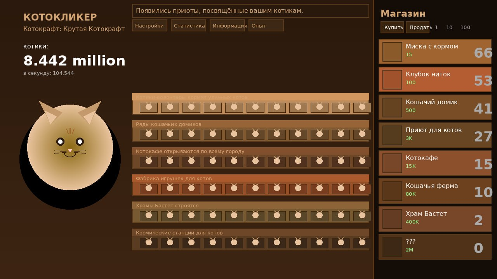

Котокликер — это браузерная idle-игра, вдохновлённая классическим Cookie Clicker. Вместо печенек здесь котики, а вместо фабрик — приюты и котокафе.
Всё просто: кликай по большому рыжему коту в центре экрана — и зарабатывай «котиков». Накопленные котики можно потратить в магазине на различные улучшения.
Каждое купленное здание автоматически генерирует пассивный доход. Чем дороже здание — тем больше котиков в секунду оно приносит.

© 2026 Котокликер. Все котики защищены.